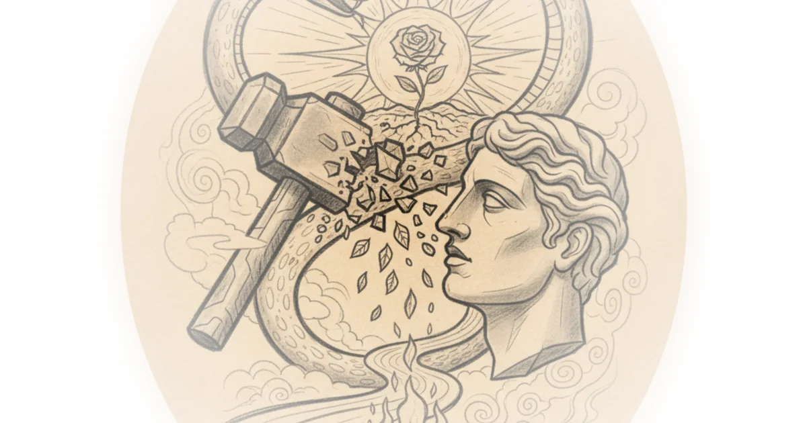

Nietzsche believed the ancient Greeks understood something modern philosophy has forgotten: that affirming life means accepting its full complexity, including suffering and discomfort.
Nietzsche's Critique of the Renunciators
Friedrich Nietzsche spent much of his later career exploring what life would look like if people woke up each morning affirming all aspects of their existence rather than constantly trying to renounce or escape them. He saw our current approach to morality as fundamentally broken—a remnant of Christian tradition that has corrupted Western thinking.

Nietzsche argued that Socrates represents the worst of this tradition. The philosopher who demanded rigid definitions for concepts like justice and beauty, then systematically dismantled every answer offered, was not pursuing truth but playing a game designed to fail. The problem wasn't merely intellectual—it was existential. By insisting that truth must come purely from rationality, Socrates and his followers denied the chaotic, passionate, context-dependent side of what reality actually is.
"My recreation, my predilection, my cure after all Platonism has always been thus: Thucydides."
Nietzsche respected the historian Thucydides precisely because he didn't moralize history or attribute events to divine retribution. Instead, Thucydides focused on power dynamics and pragmatic moves made by cultures—accepting the harsh reality of political life without attempting to justify it through religious or philosophical justification.
The Philosophy of Discomfort
What happens when someone shifts from renouncing discomfort to affirming it? Nietzsche suggests that discomfort becomes simply part of the journey rather than a sacrifice to be paid. If you want something, sometimes the discomfort is the set of sensations you're in—to get where you want to go, you affirm that journey rather than treat it as some religious blood sacrifice.
This represents a fundamental shift in perspective. Rather than approaching life with the misery-inducing pessimistic outlook that treats discomfort as an enemy to be minimized or removed, the life-affirming perspective sees discomfort as just another aspect of existence—neither good nor bad, simply present.
Greek Tragedy as Teaching Tool
For anyone seeking this more life-affirming direction, Nietzsche pointed to ancient Greek tragedies. These plays offer something radically different from modern storytelling, which typically follows predictable patterns: protagonists facing antagonists, conflict that resolves into happy endings where the good character always wins.
Greek tragedies instead depict genuine ambiguity. They celebrate the fragility of existence and the true complexity of events—without attempting to moralize or justify what happens. The 31 surviving ancient Greek tragedies present a world where characters face circumstances they cannot control, cannot escape through mere willpower, and cannot resolve through simple moral clarity.
"There is no more clear indicator of a simple mind that hasn't thought about the complexity of things than someone who demands a rigid definition for something and then says we can't have a conversation about it until you give me a perfect definition."
Simon Critchley's Analysis
Contemporary philosopher Simon Critchley, writing in 2019's "The Greeks and Us," has analyzed these tragedies extensively. His work demonstrates how Greek tragedy reflects an entirely different way of orienting toward the world—one that celebrates true ambiguity rather than trying to resolve it into neat moral categories.
Critchley's accessibility makes his analysis valuable for modern readers seeking to understand what Nietzsche was getting at. The Greeks, he argues, understood something we've lost: that existence is fundamentally ambiguous, and any attempt to force it into rational categories will necessarily fail.
Counterarguments
Critics might note that Nietzsche's own writings became increasingly erratic and difficult to interpret, raising questions about whether his radical approach to values actually functions as coherent philosophy or simply represents sophisticated pessimism dressed in poetic language. Additionally, the life-affirming perspective risks becoming justification for cruelty—affirming life could mean affirming hierarchies and power structures that victimize the weak.
Bottom Line
Nietzsche's deepest insight is that we inherit a tradition of life-denying thinking without realizing it—we smuggle into every moment assumptions about what should be comfortable, predictable, and morally justified. The strongest part of his argument is identifying where this tradition comes from: the Socratic demand for rational certainty combined with Christian moralizing about suffering. His biggest vulnerability is that his proposed alternative—affirming life in all its chaos—remains more poetic than practical. What does a morality structured around affirmation actually look like? Nietzsche admitted he couldn't fully answer that question, suggesting the work remains unfinished.